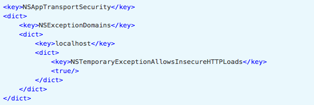

Android Studio 配置
安装过程中有一些需要改动的选项：
- 选择Custom选项：

- 勾选Performance和Android Virtual Device
- 安装完成后，在Android Studio的启动欢迎界面中选择Configure | SDK Manager


- 在SDK Platforms窗口中，选择Show Package Details，然后在Android 6.0 (Marshmallow)中勾选Google APIs、Intel x86 Atom System Image、Intel x86 Atom_64 System Image以及Google APIs Intel x86 Atom_64 System Image
- 在SDK Tools窗口中，选择Show Package Details，然后在Android SDK Build Tools中勾选Android SDK Build-Tools 23.0.1。（必须是这个版本）


基于iOS现有项目植入React Native
由于React并没有假设你其余部分的技术栈——它通常只作为MVC模型中的V存在——它也很容易嵌入到一个并非由React Native开发的应用当中。安装依赖
- CocoaPods gem install cocoapods
- npm install react
- npm install react-native
- 添加Podfile
- pod install

创建React Native运用
- 创建React Native 入口文件 index.ios.js
- 封装RCTRootView, 创建ReactView.h ReactView.m
index.ios.js

ReactView.h

ReactView.m

ViewController里添加React Native View
启动服务器
在工程的根目录下，我们可以开启React Native开发服务器：
(JS_DIR=`pwd`/; cd node_modules/react-native; npm run start -- --root $JS_DIR)
在iOS 9以上的系统中，除非明确指明，否则应用无法通过http协议连接到localhost主机。请在Info.plist文件中将localhost列为App Transport Security
Hello React Native